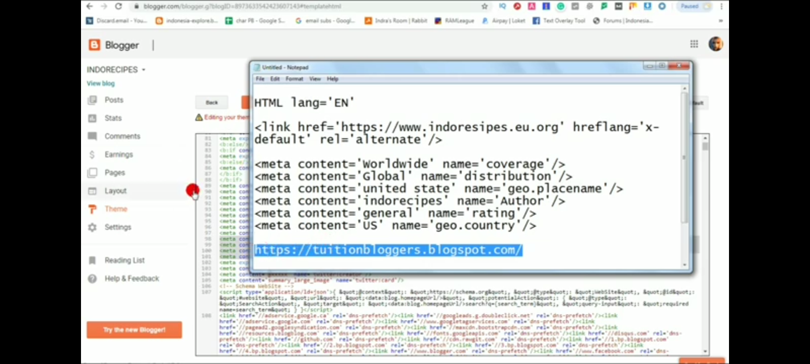
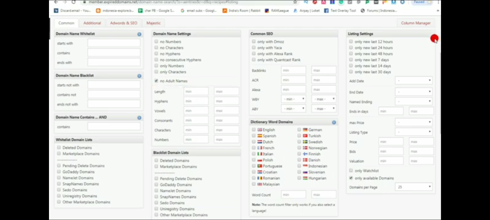
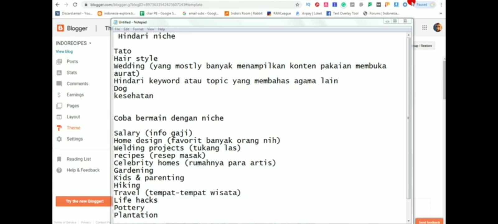
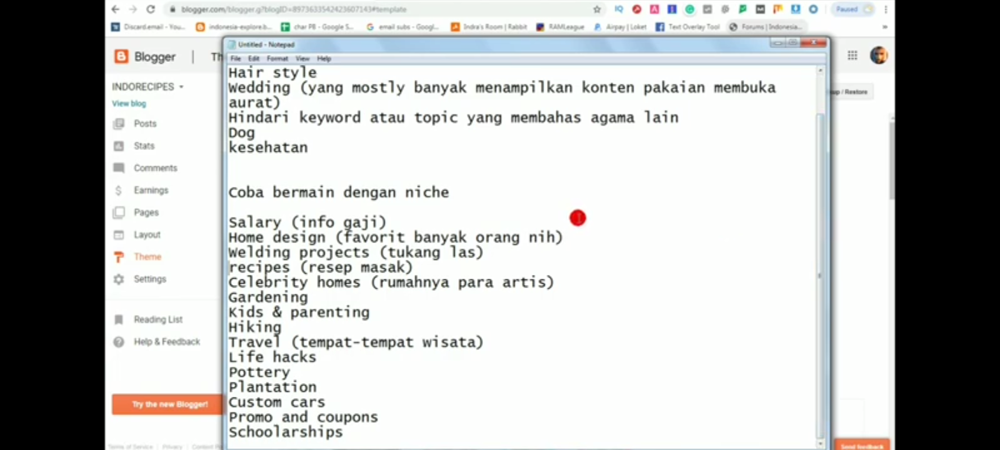
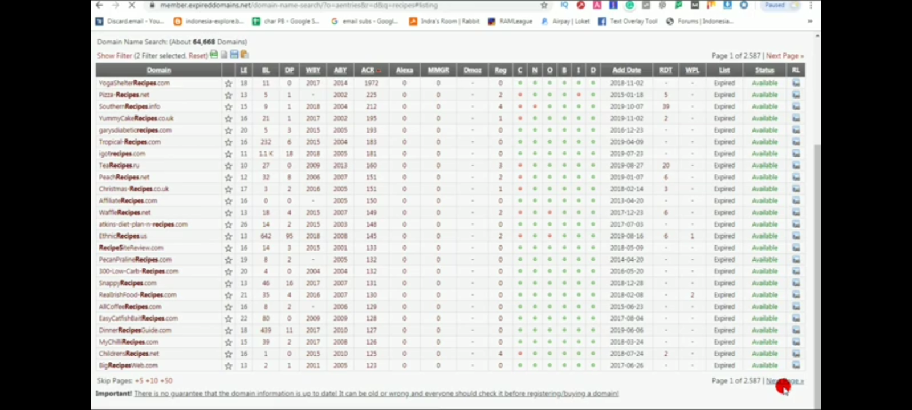
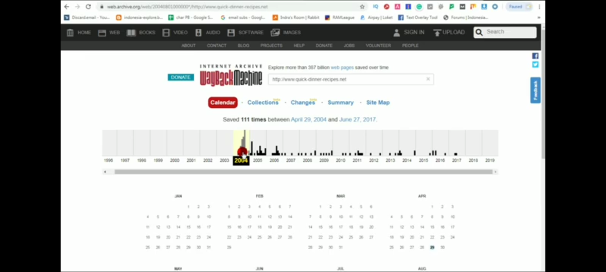
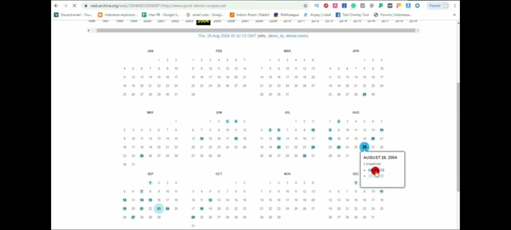
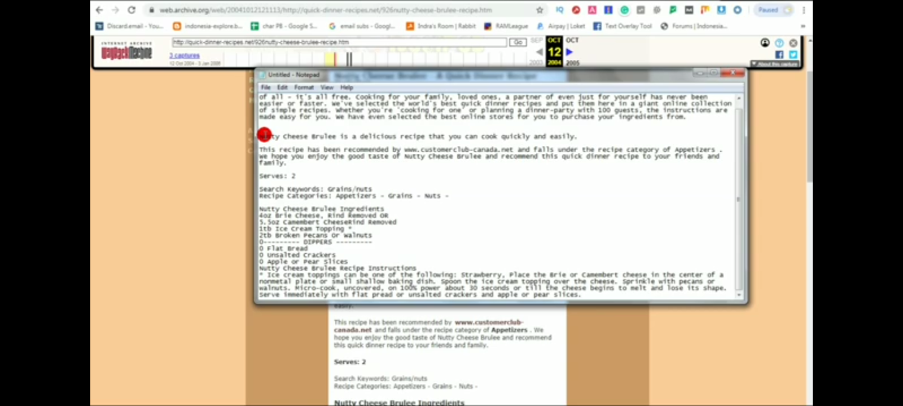

1. Sudah mempunyai blog?, jika belum click buat
2. masukan script ini di blog anda
3. masuk akun blogger kamu, pilih edit tema, click edit html, paste di situ ,click save
4. cara kedua tanpa edit menggunakan template
5. unduh template luar negeri tanpa edit click download
masuk tema pulihkan, atau edit html hapus semua html, pastekan code template yg tadi sudah di unduh
6. setalah tema sudah di edit luar negeri, sekaran kita membuat article tanpa mengetik dan aman
A. akses link www.expireddomains.net
B. atur samakan dengan di gambar [✓]
C. cari domain dengan format di bawah, jauhi membuat article yg tertera di gambar
- hindari niche
- gunakan niche
- mulai lah mencari web mati/tidak aktif, di bar search dengan domain niche yg di saranka di atas
- pilih salah satu domain non aktif
- setelah memilih
- kita akan di arahkan ke bar statistics
- pilih di tahun yg masih aktif
- pilih article yang ingin di akses
- copy article tersebut, tempelkan di notepad++ atau lainnya
setelah itu copy article, pastekan di postingan blog luar negeri tadi
selesai